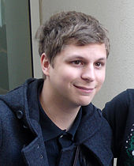

About Me

Not me but Michael Cera, who I look like.
My name is Aidan Nannini, I am an aspiring game developer, part-time dishwasher, and bird enthusiast, who created this blog to express my love of all things avian and share it with the world.
Interests:
- Gaming
- Birds
- Italian Cooking
- Programming and Web Development
- Nature Walks